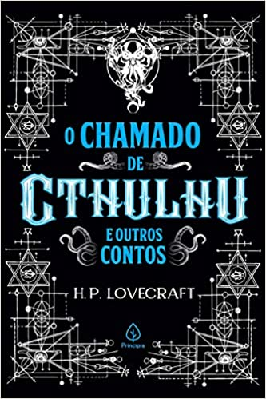

Esse site foi criado no intuito de agradar o leitor, e informar de livros interessantes para o paladar do leitor.
Esse site foi criado no dia 08/07/2022.
Aqui falaremos sobre livros de qualquer tipo de gênero, aventura, ação, romance, fantasia, terro, suspense, e etc.
Autor: Howard Phillips Lovecraft Como foi criado: “O chamado de Cthulhu”S é um conto do norte-americano H.P. Lovecraft que logo se tornou um clássico do terror. Foi escrito em 1926 e publicado pela primeira vez na revista estadunidense Weird Talesa em fevereiro de 1928. Cthulhu é um deus que nas primeiras páginas do conto aparece como um ídolo de argila quase indescritível, possuindo um culto multimilenar dedicado a trazê-lo de volta; o seu retorno desencadearia o fim da humanidade. Neste livro, encontramos esse clássico e mais sete contos consagrados do autor na literatura de terror.
Inauguração: dia 08/07/2023